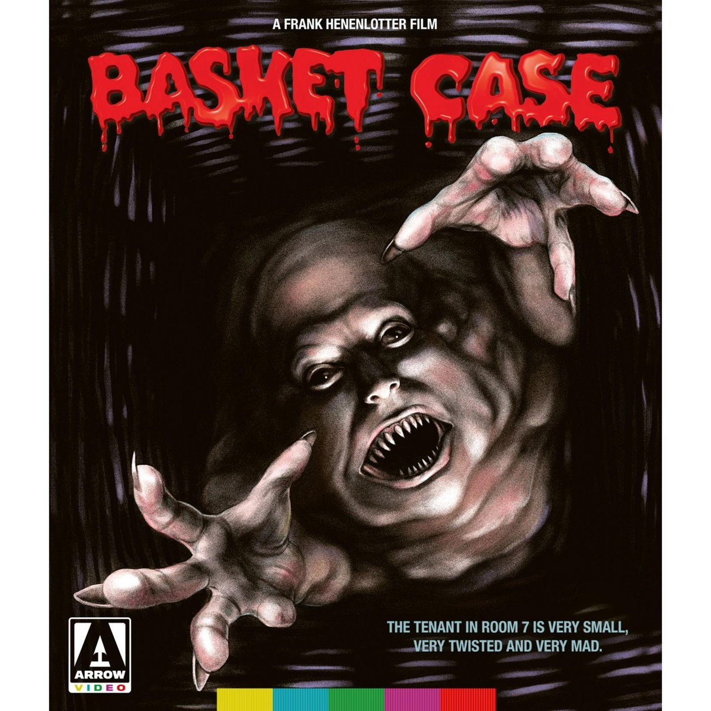

Courtesy of Arrow Video.
Basket Case
Fidelio may earn a commission if you buy through this link. How Fidelio is paid
The edition
- Label
- Arrow Video
- Format
- 4K UHD
- Runtime
- 91 min
- Aspect ratio
- 1.37:1
- Audio
- Original uncompressed PCM mono audio
- Subtitles
- English SDH
- Region
- Region free
- Rated
- R
- Barcode
- 760137194941
Special features
- 4K Ultra HD Blu-ray special edition
- 4K restoration from the original 16mm negative by the Museum of Modern Art in cooperation with director Frank Henenlotter
- 4K (2160p) UHD Blu-ray presentation in Dolby Vision (HDR10 compatible)
- Original uncompressed PCM mono audio
- Optional English subtitles for the deaf and hard of hearing
- Audio commentary with writer/director Frank Henenlotter and star Kevin Van Hentenryck
- Archival audio commentary with Frank Henenlotter, producer Edgar Ievins, actor Beverly Bonner and filmmaker Scooter McRae
- Basket Case 3-1/2: An Interview with Duane Bradley, a short film by Frank Henenlotter
- Me and the Bradley Boys, an interview with actor Kevin Van Hentenryck
- A Brief Interview with Director Frank Henenlotter, a 2017 interview with the director
- Seeing Double: The Basket Case Twins, an interview with actors Florence and Mary Ellen Schultz
- Blood, Basket and Beyond, an interview with actor Beverly Bonner
- The Latvian Connection, a featurette including interviews with producer Edgar Ievins, casting person/actor Ilze Balodis, associate producer/special effects artist Ugis Nigals and Belial performer Kika Nigals
- Belial Goes to the Drive-In, an interview with film critic Joe Bob Briggs
- Basket Case at MoMA, footage from the 2017 restoration premiere
- What’s in the Basket?, a feature-length documentary covering the three films in the Basket Case series
- In Search of the Hotel Broslin, an archival location featurette
- The Frisson of Fission: Basket Case, Conjoined Twins, and ‘Freaks’ in Cinema, a video essay by Travis Crawford
- Slash of the Knife (1976, 30 mins), a short film made by Frank Henenlotter featuring many of the same actors from Basket Case
- Optional audio commentary on Slash of the Knife with Frank Henenlotter and playwright Mike Bencivenga
- Basket Case and Slash of the Knife outtakes
- Belial’s Dream (2017, 5 mins), an animated short film by filmmaker Robert Morgan
- Extensive image galleries
- Trailers, TV and radio spots
- Reversible sleeve featuring original and newly commissioned artwork by Sara Deck
As listed by Arrow Video.
Fidelio keeps collections like this one, edition by edition. What Fidelio is →